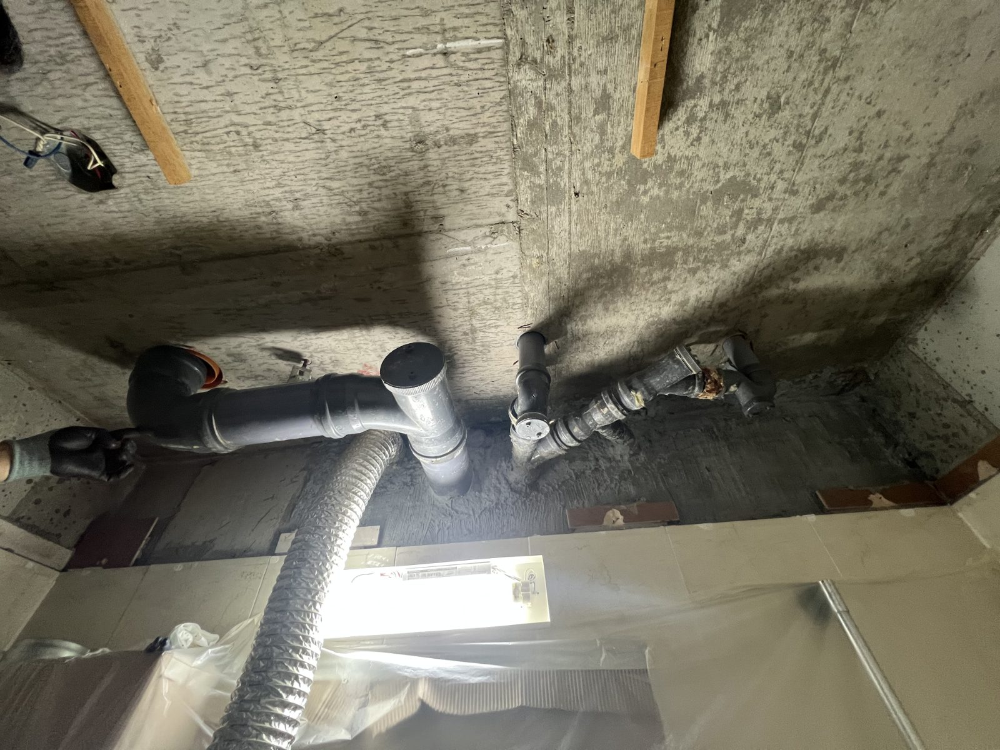

대전 선비마을3단지 세대 배관 교체 — 문제 구간을 확인하고 갈았습니다

대전 선비마을3단지 세대 내 노후 배관 구간을 교체한 현장입니다. 새는 지점만 때우지 않고 구간을 교체한 이유를 함께 정리했습니다.
어떤 공사였나요
세대 내 노후 배관의 문제 구간을 새 배관으로 교체한 현장입니다. 부식이 진행된 배관은 한 곳을 때워도 옆에서 다시 새는 경우가 많아, 배관 상태를 보고 부분 보수 대신 구간 교체로 진행했습니다.

때울까, 갈까
누수 보수에는 새는 지점만 잡는 방법과 문제 구간을 교체하는 방법이 있습니다. 어느 쪽이 맞는지는 배관의 재질과 부식 정도를 열어서 봐야 판단할 수 있습니다. 열어보기 전에 크게 뜯자고 권하는 견적은 한 번 의심해 보셔도 됩니다.
교체와 확인
문제 구간을 철거하고 새 배관을 연결한 뒤, 수압을 걸어 새는 곳이 없는지 확인했습니다. 확인이 끝난 뒤에 열었던 부위를 복구했습니다.
이런 신호가 있으면 점검하세요
모든 수도를 잠근 상태에서 계량기가 돌아가면 어딘가에서 물이 새고 있다는 뜻입니다. 수도요금이 이유 없이 오르거나 아랫집 천장에 얼룩이 생겼다면 배관 점검을 받아보시는 게 좋습니다.